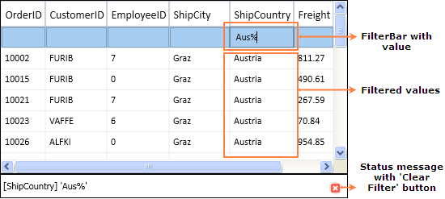

Essential Grid supports FilterBar, which filters the records with different expressions depending upon the Column type. The FilterBar will be displayed at the top of the Grid below the Header Row by setting the “ShowFilterBar” property to true in GridDataControl class. The filtering tokens are tabulated in the Tokens to filter the value table.
Use Case Scenarios
FilterBar can be used for applications for which the user wants to filter the Grid at run time.
Adding FilterBar to an Application
This topic explains the implementation of the FilterBar in an application. The following steps explain the implementation of FilterBar support in an application.
1. Creating an application
Create a WPF application and add GridDataControl to it.
2. Setting the FilterBar Property
Set the FilterBar property to “true” for the GridDataControl object. The Filter status message can be viewed by enabling the property ShowFilterStatusMessage. The filtering mode can be set to Immediate or OnEnter by setting the Enum property GridDataFilterBarMode. The following code snippet explains the implementation of the FilterBar.
|
[C#]
this.dataGrid.ShowFilterBar = true; this.dataGrid.ShowFilterStatusMessage = true; this.dataGrid.FilterBarMode = GridDataFilterBarMode.Immediate; //this.dataGrid.FilterBarMode = GridDataFilterBarMode.OnEnter;
|
|
[VB]
Me.dataGrid.ShowFilterBar = True Me.dataGrid.ShowFilterStatusMessage = True Me.dataGrid.FilterBarMode = GridDataFilterBarMode.Immediate 'Me.dataGrid.FilterBarMode = GridDataFilterBarMode.OnEnter
|
3. Run the application and use the filtering tokens in the FilterBar. The valid tokens are listed in Tokens to filter the value table. The following is a sample output of FilterBar implementation.

Figure 176: FilterBar with ShowFilterStatusMessage Property set to true
4. Clearing the Filter
The Current filter value with the column name will be displayed at the bottom of the GridDataControl (just like status bar). It contains the button (red color) called “Clear Filter”, which is used to clear the entire filter and show the default level records.
Tables for Properties, Methods, and Events
Properties
Table 40: FilterBar Support Table
|
Property |
Description |
Data Type |
Default value |
Class Name |
|
ShowFilterBar |
Shows the FilterBar, if it is true. |
Boolean |
False |
GridDataControl |
|
ShowFilterStatusMessage |
Shows the message at the bottom of the grid depending on the current Filter applied, if it is true. |
Boolean |
True |
GridDataControl |
|
FilterBarMode |
Filter result will be shown immediately if "Immediately" is set and will be shown on pressing the Enter key if "OnEnter" is set
|
Enum |
Immediate |
GridDataControl
|
|
FilterBarMode |
Filter result will be shown immediately if "Immediately" is set and will be shown on pressing the Enter key if "OnEnter" is set
|
Enum |
Immediate |
GridDataVisibleColumn |
Table 41: FilterBar Support Table
|
Filter Token |
Examples (should be used as like below) |
Description |
Used at |
|
% |
value% |
StartsWith |
AlphaNumeric |
|
%value |
EndsWith |
AlphaNumeric | |
|
# |
#value |
Contains |
AlphaNumeric |
|
< |
<value |
LessThan |
Numeric & DateTime |
|
<= |
<=value |
LessThanOrEqual |
Numeric & DateTime |
|
> |
>value |
GreaterThan |
Numeric & DateTime |
|
>= |
>=value |
GreaterThanOrEqual |
Numeric & DateTime |
|
= |
=value |
Equals |
Numeric & DateTime |
|
! |
!value |
Not Equals |
Numeric & DateTime |
|
and |
>value and <=value >value and <value >=value and <value >=value and <=value |
between |
Numeric & DateTime |
|
or |
>value or <=value >value or <value >=value or <value >=value or <=value |
between |
Numeric & DateTime |
|
0 |
0 |
Equals |
Boolean |
|
1 |
1 |
Equals |
Boolean |
*values can be entered in any format (not case sensitive)
Sample Link
Refer to the samples in the shipped Sample Browser.
Go to Essential Studio WPF Sample Browser à Grid à GridDataControl-AdvancedàFilterBarDemo.
 Dropdown
FilterBar
Dropdown
FilterBar